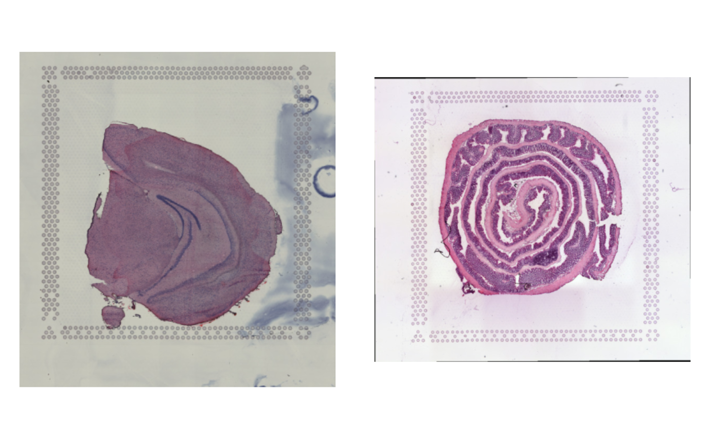

Merge 10x Visium data
merge.RdMerges two or more Seurat objects containing SRT data while making sure that the spatial data (images and spot coordinates) are handled correctly.
Arguments
- x
A
Seuratobject- y
A
Seuratobject or a list ofSeuratobjects- merge_data
Merge the data slots instead of just merging the counts (which requires re-normalization); this is recommended if the same normalization approach was applied to all objects. See
mergefor details.- merge_dr
Merge specified DimReducs that are present in all objects; will only merge the embeddings slots for the first N dimensions that are shared across all objects. See
mergefor details.- project
Projectname for theSeuratobject
Details
NB: If you use the generic merge function you will not be able
to use any of the semla visualization methods on the output object as
the Staffli object will be broken.
See also
Other subset-and-merge:
SubsetSTData()
Examples
se_mbrain <- readRDS(system.file("extdata",
"mousebrain/se_mbrain",
package = "semla"))
se_mcolon <- readRDS(system.file("extdata",
"mousecolon/se_mcolon",
package = "semla"))
se_mbrain
#> An object of class Seurat
#> 188 features across 2560 samples within 1 assay
#> Active assay: Spatial (188 features, 170 variable features)
#> 2 layers present: counts, data
se_mcolon
#> An object of class Seurat
#> 188 features across 2604 samples within 1 assay
#> Active assay: Spatial (188 features, 182 variable features)
#> 2 layers present: counts, data
# Merge a mousebrain dataset with two mousecolon datasets
se_merged <- MergeSTData(x = se_mbrain, y = se_mcolon)
se_merged
#> An object of class Seurat
#> 188 features across 5164 samples within 1 assay
#> Active assay: Spatial (188 features, 0 variable features)
#> 2 layers present: counts, data
# Plot H&E images
ImagePlot(se_merged |> LoadImages(verbose = FALSE))
